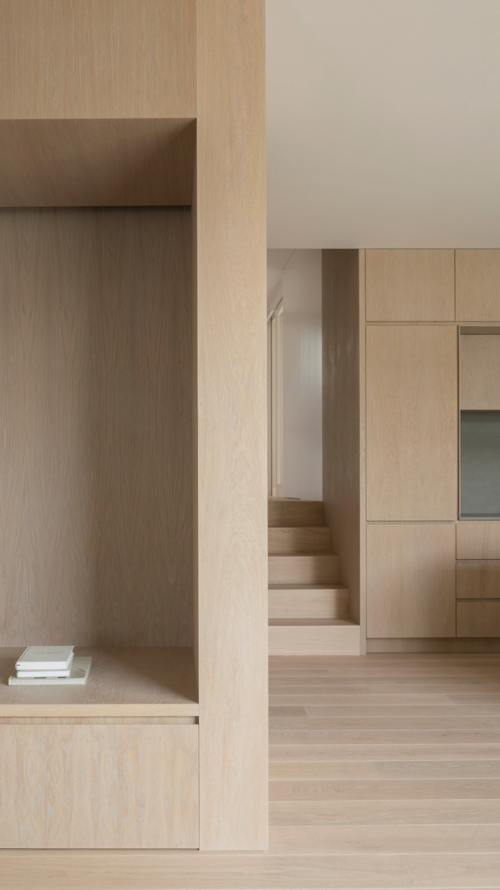
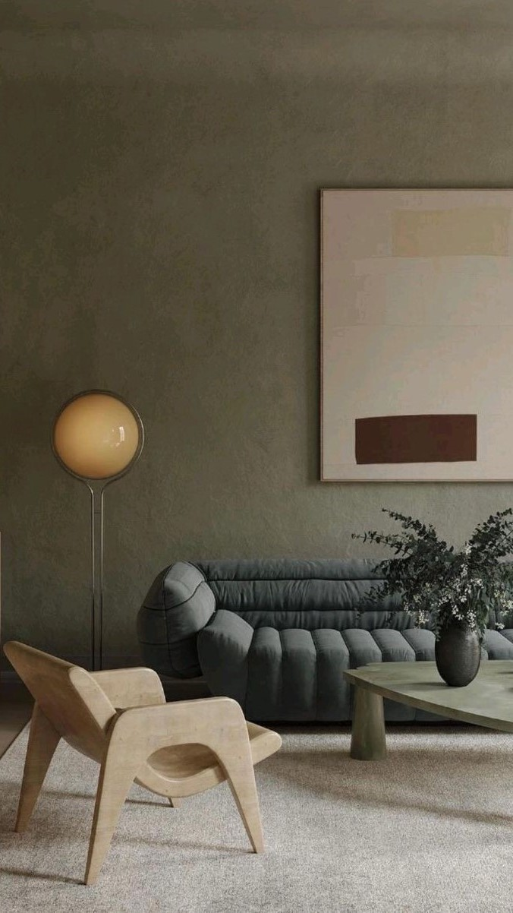
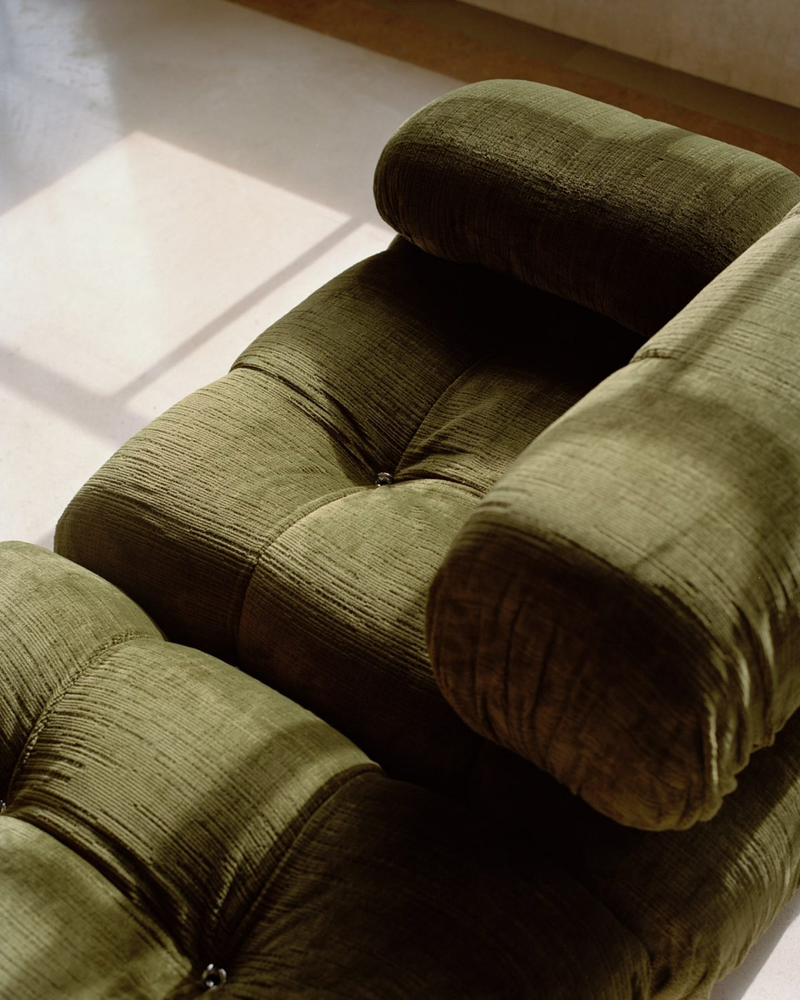
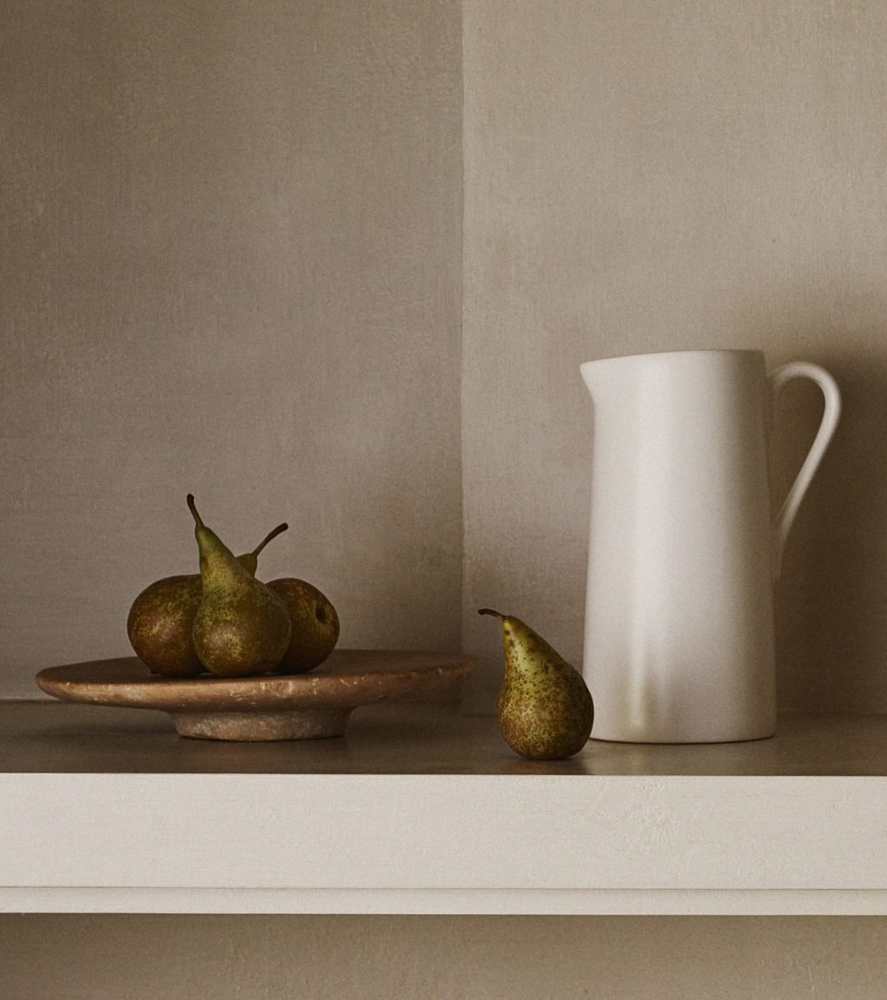

servicios
Arquitectura
Abordamos todas las fases de una obra de arquitectura, Proyecto, Dirección, Administración y Construcción. El proyecto es ubicado en su sitio geográfico, y con las coordenadas se llevan a cabo los estudios de terreno, asoleamiento, vientos y eficiencia energética. Generamos imágenes hiperrealistas, sobre el proyecto finalizado, para tener una visualización anticipada de la obra. Durante la etapa de proyecto conceptual, se utilizan recorridos virtuales para el análisis de la morfología. Al modelo tridimensional lo acompaña, la documentación ejecutiva completa en 2D, donde a su vez interactúan entre ellas de manera inteligente, visualizando cualquier elemento constitutivo del proyecto en ambos formatos al mismo tiempo.
Interiorismo
Realizamos una entrevista introductoria para definir las necesidades y los requisitos personalizados de cada ambiente del proyecto, a través de moodboards, imágenes realistas y tours en 360 para visualizarlas como realidad virtual, mostramos las propuestas de diseño. Este servicio se manifiesta principalmente en el diseño e intervención desde la calidad espacial, afectando al ambiente desde lo edilicio. Abordando así, desde el diseño de los revestimientos de muros, morfologías de cielorrasos, diseño de la iluminación y sensaciones del espacio, hasta el último detalle en la selección de paletas de colores, mobiliarios, telas, texturas, etc.
Mobiliario
En Alva, incorporamos la fabricación y venta de mobiliario estándar y a medida. El mobiliario a medida se adapta a la arquitectura pensada, para optimizar y aprovechar al máximo el espacio útil, pasando a ser elementos integrados en la misma arquitectura. Se trata de un trabajo artesanal que nos garantiza calidad, resistencia y durabilidad de las piezas, con el mínimo de cuidados, y con la posibilidad de personalizar cada pieza con la materialidad, color y textura que más se adapte a los gustos y necesidades de cada cliente. Hacemos replanteos in situ y ofrecemos traslado con colocación, llave en mano.
Objetos
La búsqueda de una identidad de decoración siempre es nuestro objetivo. Para facilitar el proceso de renovación del estilo de tu hogar, ofrecemos un servicio propio completo de decoración de interiores. Juntos, creamos un diseño en el que, con mucha frecuencia, incorporaremos parte de tu mobiliario actual. Podemos ayudarte a optimizar un concepto, asesorarte para combinar elementos o apoyarte en el rediseño completo de tu hogar: la decisión es solo tuya. El diseño se ajustará a tu presupuesto y estilo de vida y, al mismo tiempo, reflejará tu personalidad única. Una vez que estés completamente satisfecho, haremos que tome forma con tanta o tan poca ayuda como requieras.